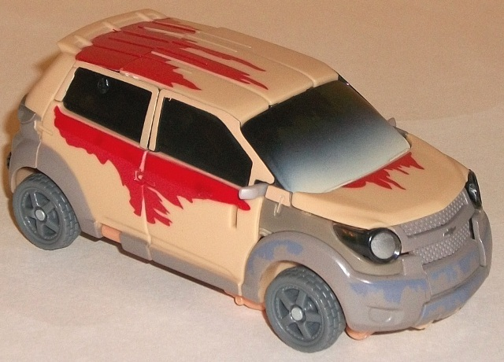
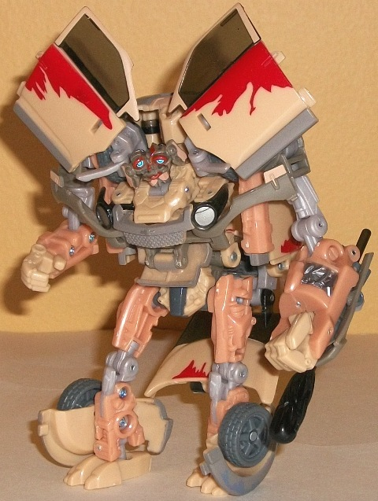
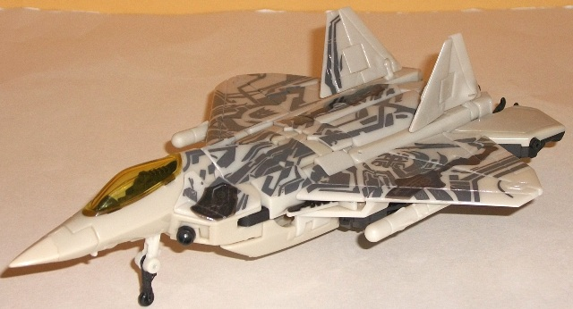
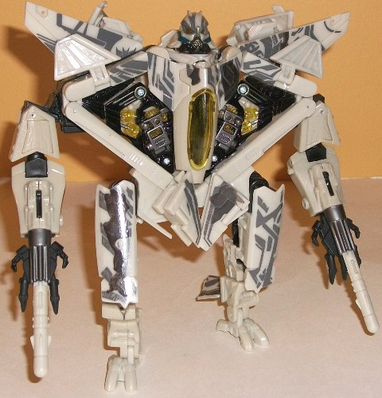

Starscream's
Assault (Wal-Mart Exclusive)
Starscream's
Assault (Wal-Mart Exclusive)
Set Price
: $30 U.S.
(NOTE: Because this set is composed of repaints,
this is not a full-blown review. This mainly covers any changes made to
the set and the color scheme, and merely compares it to the original versions
of these molds. For a review on the original RotF deluxe Mudflap mold,
go
here
. For a review on the original RotF
voyager Starscream mold, go
here
.)
Mudflap


Allegiance
: Autobot
Size
: Deluxe
Difficulty of Transformation
: Hard
Color Scheme
: Tannish gray, bluish
gray, light tan, dark tinted clear plastic, light milky tannish orange,
and some white, dark gray, light sky blue, light milky gray, red, light
red, and silver
Individual Rating
: 7.0
Mudflap here looks like
he's been in the desert for a looong while. His very color scheme looks
like it's got sand and dirt all over it, with less of his "real" colors
showing through the light tan (meant to represent sand) than the actual
tan coloration itself! (That's because the tan itself is the plastic color
this time around, with the "real" red underneath being paint apps-- however,
it should be noted that Mudflap's original colors were dark orange, not
red, which makes this detail a little off.) Likewise, the bluish gray has
mostly been painted over in vehicle mode with a slightly muddier version
of the color, which looks REALLY nice and more realistic-looking than almost
any other "battle damage/wear" paint apps I can think of. Mudflap's front
windshield also has a bit of "sand" (read: a white spray paint app) across
the front of it, with the rest of the windows being so darkly tinted to
the point of being nearly opaque. This is good news, since if they were
too easily see-through you could make out his robot bits behind the windows,
so kudos there. In robot mode, although a bit of that ugly "light milky
gray" color that's far too common on Transformers these days comes through
on some of the smaller parts, overall Mudflap is a cornucopia of different
colors. In addition to the tan and bluish gray from his vehicle mode, he's
also got a very nice light milky orange which-- as per the "theme" of this
redeco-- looks like it's been faded out from sand and wear-and-tear. Mudflap
still has a bit of dark gray and silver to give even more color variety
to this mode, and it all comes together quite well, with most of the tannish
colors contrasting nicely with the grayish colors without looking too dull.
No mold changes have
been made to this version of Mudflap.
Mudflap Tech Specs
:
Strength: 4.0
Intelligence: 5.0
Speed: 7.0
Endurance: 5.0
Rank: 2.0
Courage: 9.0
Fireblast: 4.0
Skill: 3.0
Starscream


Allegiance
: Decepticon
Size
: Voyager
Difficulty of Transformation
: Hard
Color Scheme
: Light whitish tan,
black, glossy gray, and some transparent yellow, dark gray, and metallic
gunmetal gray
Individual Rating
: 8.7
Starscream, like Mudflap,
has a similar "sandy deco" of his original paint job, but it's much more
subtle on this version. The main plastic on this version is roughly the
same hue as that on the original release of this mold, but a couple of
shades whiter. The "Cyberglyphs" on the jet mode are also a bit of a glossier
shade and less metallic than that seen on the initial release, to simulate
sand partially covering (or having worn away) the edge on the Cyberglyphs.
There's also a few extra paint apps on the jet that are meant to simulate
battle damage, as they look like parts of Starscream's hull have been ripped
away or blown off to reveal some gears and the like on the inside. (It
should be noted that this effect is entirely paint apps, though, not mold
changes.) It's nice, but given how close in hue it is to the Cyberglyphs,
it took me a bit to try to figure out exactly what they were supposed to
be. The transparent plastic has similarly been lightened a bit, from amber
on the inital release to a lighter yellow on this release-- again, to fit
with the whole "sand worn" theme. The black plastic parts and gunmetal
gray paint apps are still the same, however. Taken all together, the overall
feeling of the color scheme is pretty much the same as the original RotF
voyager Starscream layout, but a bit more "bleached".
No mold changes have
been made to this version of Starscream.
Starscream Tech Specs
:
Strength: 8.0
Intelligence: 4.0
Speed: 10.0
Endurance: 7.0
Rank: 9.0
Courage: 5.0
Fireblast: 8.0
Skill: 8.0
"Starscream's Assault"
is the weaker of the two Wal-Mart exclusive "Hunt for the Decepticons"
voyager/deluxe 2-packs. Mudflap has a great deco scheme that has one of
the most realistic "sand wear" paint jobs I've ever seen on a Transformer,
but unfortunately the mold is mediocre at best. Starscream-- the larger
of the two toys in the pack and easily the better of the two molds-- is
largely unchanged, looking like a bleached-out version of the original's
colors and generally not the most attractive to look at. If you don't have
any other version of the RotF Voyager class Starscream mold yet and want
one or a version of Mudflap, this
may
be worth a pickup if you don't
mind complex transformations. Otherwise, pass.
Starscream's Assault Bio
:
If he had thought to ask the other Autobots,
Mudflap would have learned that going after Starscream alone was a bad,
dangerous idea. But Mudflap has never been one to skip doing something
just because it's a bad idea.
Reviews by Beastbot
Back to
Transformers: Autobot Alliance Index